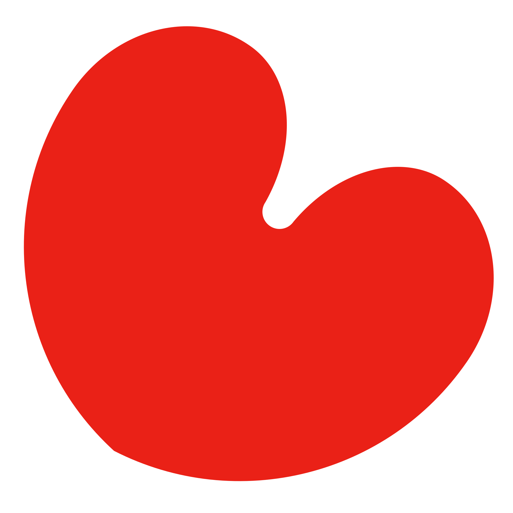
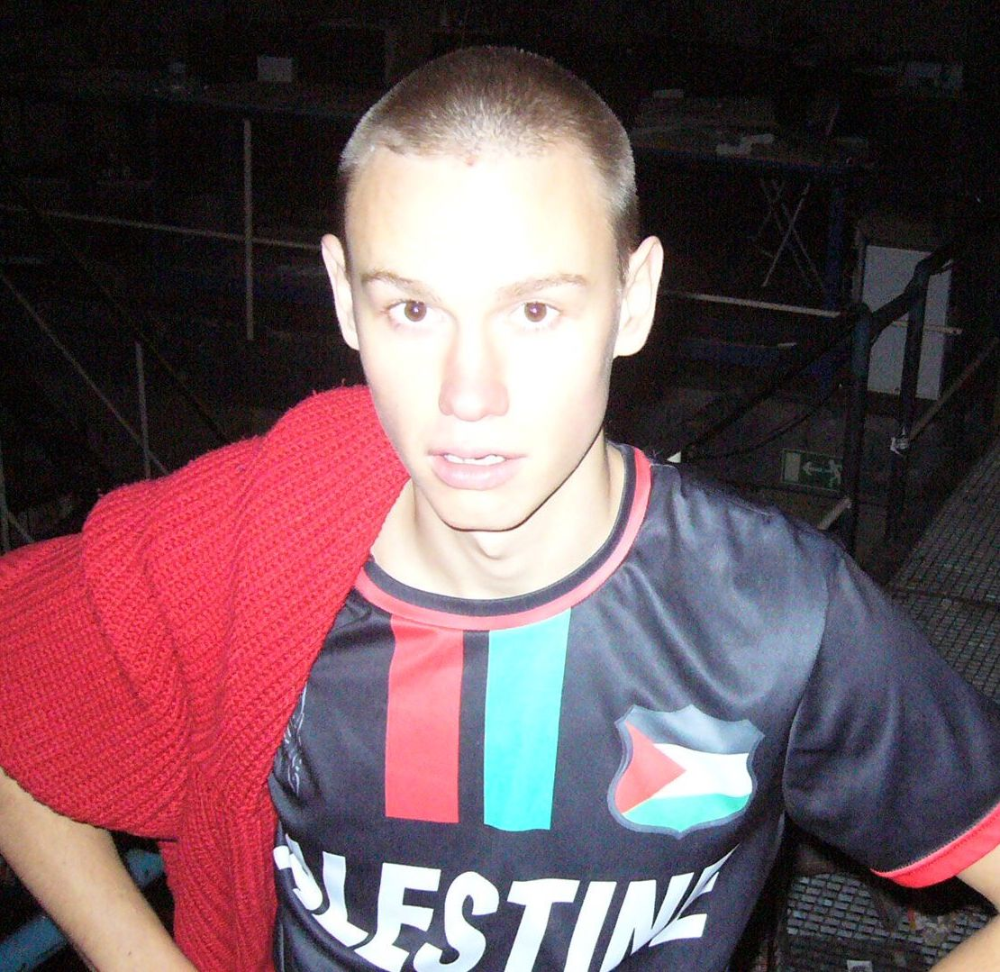

Pier Woudstra (b. 2001, Karlovac) is a performing artist & instrument builder based in Utrecht. His practice explores building systems that encourage playfulness. These systems can be technological in nature like digital instruments or theoretical like the structure of a performance.
Sonically, he is inspired by folk music from his native region in the Balkans, together with the fast-paced aesthetics of internet music. After gaining experience with performing in clubs with the mixed-media collective KlokPack6ix, he has recently focused on live performances with flute, accordion, and DIY electronics.
Contact:

Check out my friends' sites as well :)